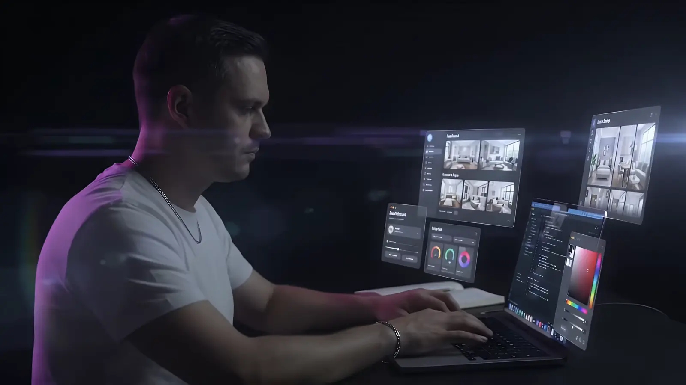

01Дизайн и код
Дизайн, код и анимация в одних руках
Макет сразу собирается в живой сайт: ничего не теряется между дизайнером и программистом.
Общий принцип для всех пяти: ролик показывается целиком, в кадре 16:9 без обрезки, и ничто не лежит поверх него. Текст стоит в свободной части экрана: на телефоне под кадром, на телефоне лёжа и в вариантах 2-3 на десктопе справа.
1 Кинозал
Самый спокойный вариант. Под кадром счётчик этапа с прокруткой цифры, три полоски как в сторис (заполняются скроллом) и субтитр. Слова поднимаются из-под маски по одному, пояснение проявляется из размытия. На десктопе субтитр и пояснение стоят в две колонки.

Дизайн, код и анимация в одних руках
Макет сразу собирается в живой сайт: ничего не теряется между дизайнером и программистом.
Каждый экран проверяю на реальных телефонах
iPhone, Android, планшеты: шрифты, отступы и анимации без рывков.
Сдаю сайт, которым вы управляете сами
Админка MODX и инструкция: тексты, цены и фото меняете без программиста.
2 Терминал
Связка с идеей «сайт изнутри». Под кадром стеклянный редактор (backdrop-filter поверх свечения ролика). Этапы печатаются фирменной кареткой ▍ прямо в такт скроллу и заполняют полосы-скелетоны. Готовая строка гаснет до вторичного цвета и получает галочку. Высота блока не прыгает: место под весь текст занято заранее. На десктопе редактор справа от кадра.
3 Колода
Этапы - стеклянные карточки. Новая выезжает снизу с лёгким поворотом и ложится сверху, предыдущие отступают назад и уменьшаются. Через стекло верхней карточки видна размытая нижняя (здесь backdrop-filter работает по делу). Заголовок карточки поднимается по словам из маски. Точки снизу показывают этап. На десктопе колода справа от кадра.
Макет сразу собирается в живой сайт: ничего не теряется между дизайнером и программистом.
iPhone, Android, планшеты: шрифты, отступы и анимации без рывков.
Админка MODX и инструкция: тексты, цены и фото меняете без программиста.
4 Главы
Метафора плеера. Под кадром таймлайн с бегунком, метками глав и временем ролика, ниже три вкладки этапов. Вкладки рабочие: тап перематывает страницу к нужной главе (удобно на телефоне, не нужно долго листать). Текст главы «расшифровывается» из символов кода, как заголовок в hero.
Дизайн, код и анимация в одних руках
Каждый экран проверяю на реальных телефонах
Сдаю сайт, которым вы управляете сами
5 Раскрытие
Самый эффектный. Сначала ролик крупно, на весь экран и без единой надписи. Со скроллом камера «отъезжает»: ролик уменьшается в аккуратный кадр, и вокруг него собирается текст. Заголовок переворачивается по буквам, подписи этапов влетают по словам из размытия. Текст появляется только после того, как кадр освободил место.
01 · Дизайн и код
Дизайн, код и анимация в одних руках
02 · Проверка
Каждый экран проверяю на реальных телефонах
03 · Передача
Сдаю сайт, которым вы управляете сами
6 Раскрытие + Кинозал
Сборка из понравившегося. Вход как в варианте 5: ролик крупно и без текста, со скроллом уменьшается в кадр. Дальше субтитры кинозала: счётчик, полоски, слова из маски. На телефоне текст под кадром и видео ничем не закрыто. На десктопе текст на стеклянной плашке под кадром, видео тоже ничем не закрыто. Над кадром заголовок секции в стиле сайта, он раскрывается вместе с плашкой.
Дизайн, который ведёт к заявке
Каждый блок отвечает на вопрос клиента, а не просто украшает страницу.
Скорость без компромиссов
Сайт открывается за секунды даже на слабом мобильном интернете.
Админка, в которой не страшно
Цены, фото и тексты меняются в два клика.
Конец демо